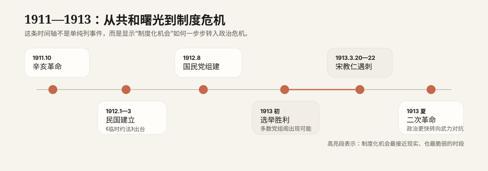

这个网站不把宋教仁案当成一则孤立的暗杀故事，而把它放回 1911—1913 年的政治转型现场：辛亥革命推翻帝制以后，中国本来有机会把革命导入制度政治，让政党、议会、责任内阁接管国家运行；但就在这条路径最有可能被实践的时候，宋教仁遇刺，制度实验迅速让位于强人政治、军政压制与武力对抗。
它要回答的不是“凶手是谁”这么简单，而是：宋教仁为什么会成为关键人物？国民党选举胜利为什么没有转化为稳定执政？为什么《临时约法》、国会、责任内阁都在，民初共和还是迅速滑向强人集权和武力摊牌？
宋教仁案之所以重要，不只是因为一位政治人物被刺杀，而是因为它集中暴露了民初共和政治的一条根本矛盾：形式上的议会政治，无法有效约束现实中的总统权、军权与行政权。
辛亥革命推翻的是帝制，但更难的问题是共和国如何运转。宋教仁的重要性，在于他试图把革命成果交给政党、议会和责任内阁，而不是继续停留在非常政治与临时妥协之中。
1913 年国民党成为第一大党，本应通过多数党组阁接近执政核心；但现实中的军权、财政和总统权并不掌握在议会手里，这让“赢得选票”与“控制国家”之间出现了巨大落差。
《临时约法》写出了责任内阁、国会监督与权力制衡的框架，但制度文本没有自动生成执行能力。军政实力越强的一方，越可能绕开文本、改写规则，甚至用暴力直接打断政治进程。
本来应该在制度内竞争的路线之争，最终通过枪击、压制、借款绕会、武力镇压来决定胜负。这说明民初共和最脆弱的地方，不在“有没有规则”，而在“规则能否真正支配权力”。
它并不是民初共和失败的唯一原因，却是各种制度困境最集中、最戏剧化的一次暴露。它让议会政治的可能性明显收缩，也让政治解决从法律与辩论更快转向武力与清洗。
专题并不回避“幕后主使”问题，但会把它放回史学边界中处理：哪些是稳定事实，哪些是主流解释，哪些仍需谨慎。这样既能保证可读性，也不把复杂历史讲成简单定案。
清朝统治被迅速撼动，帝制退出历史舞台成为现实议题。革命成功带来的是国体变化，但并没有自动解决国家如何治理的问题。
南京临时政府成立，随后孙中山让位袁世凯。《临时约法》用责任内阁和议会监督的方式限制总统权，试图把新共和国导入法治与分权框架。
唐绍仪内阁与袁世凯之间很快出现摩擦，说明“文本上的内阁制”与“现实中的总统权和军权”并不自然兼容。国民党也在这一阶段完成组建。
宋教仁积极奔走各地，宣传责任内阁、政党政治和多数党组阁，试图让革命党真正转型为公开竞争、依法建政的议会政党。
国民党成为国会第一大党，宋教仁被普遍视为未来总理人选之一。制度实验看起来第一次有了落地机会。
在赴京途中，宋教仁于上海车站遇刺，两日后身亡。案件迅速引发政治震动，调查虽一度推进，但最终未能形成彻底、稳定的司法结论。
调查线索与舆论怀疑均指向袁系关键人物，国民党与北京政府之间的互信迅速崩塌。法律解决空间越来越窄，政治对抗不断上升。
南北对立升级，二次革命爆发并很快失败。国会、政党政治和责任内阁进一步受压，共和政治逐步走向强人集权与武力政治。
先看首页，把问题框架建立起来；再看制度篇，理解“为什么共和国没有按共和方式运转”；之后再回到人物篇和事件篇，会更容易看懂宋教仁为什么关键、宋案为什么不是普通刺杀案。最后再读转折篇和争议篇，把后果链与史料边界收束起来。
宋教仁案不是民初共和困境的唯一根源。北洋军事实力过强、制度共识不足、政党基础薄弱、法治执行无力，都是更深层的背景。这个站要做的，是把宋案放回这些背景里，让它成为一个观察窗口，而不是替代全部解释。

把辛亥革命、民国成立、国民党组建、国会选举、宋案与二次革命放在同一条线里，帮助读者看到事件先后与节奏变化。
左边画“国会多数 → 责任内阁 → 政党政治 → 制度制衡”，右边画“总统集权 → 军政压制 → 规则失效 → 暴力升级”。
把“遇刺—调查政治化—互信崩塌—二次革命—政党政治受挫—共和失衡”做成可视化流程，作为转折篇核心图示。